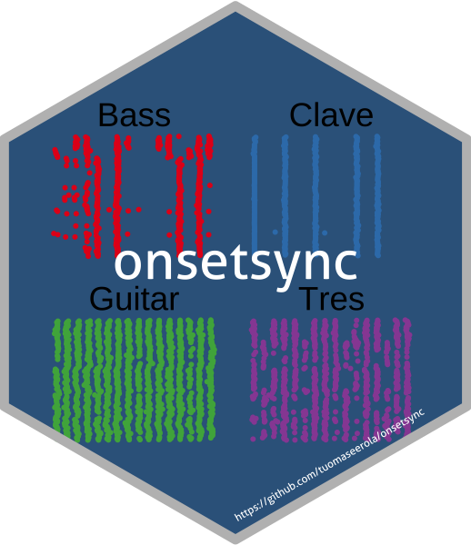
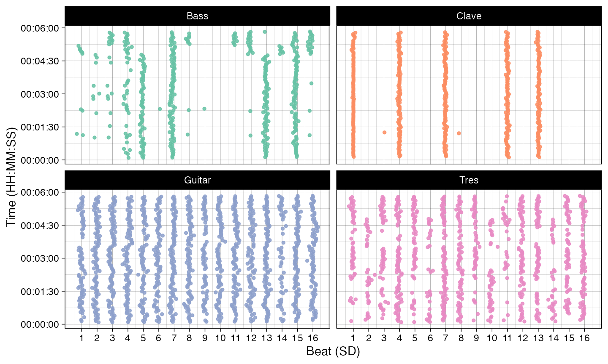
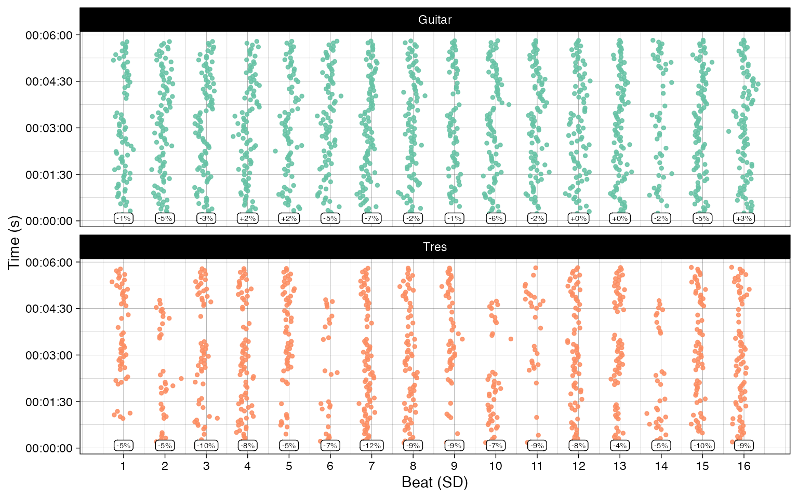
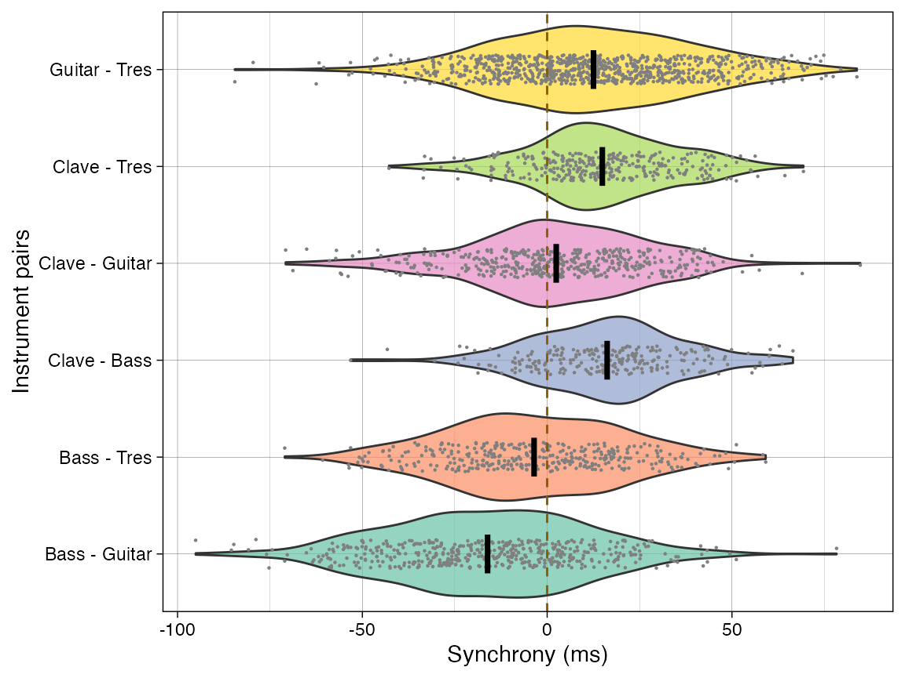
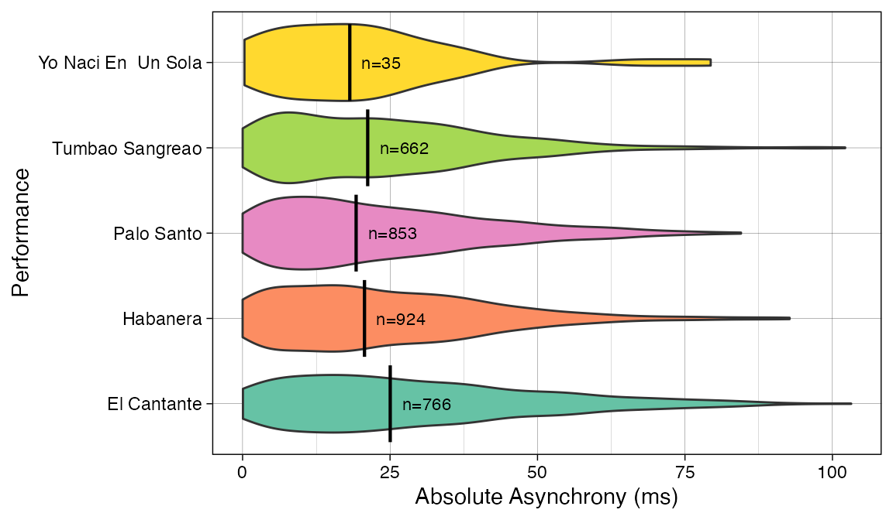
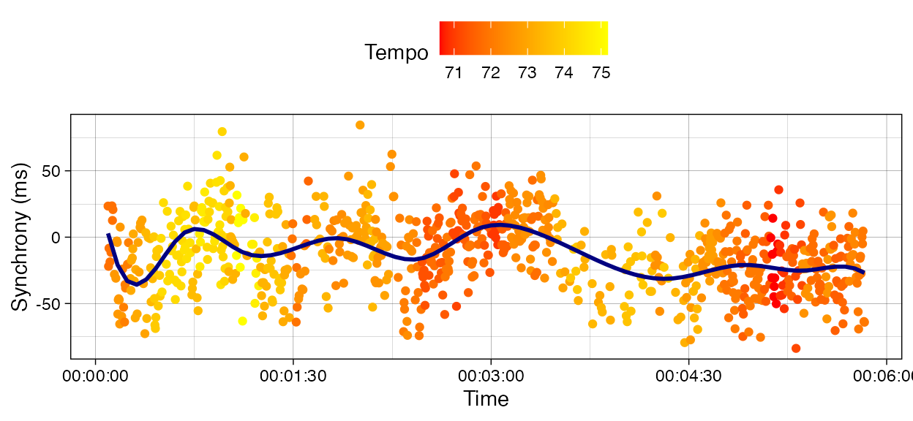

Analysis Example
analysis_example.RmdIntroduction
These analyses are the ones reported in paper titled “onsetsync: An R Package for Onset Synchrony Analysis” (submitted) by Tuomas Eerola and Martin Clayton. The sections and figures correspond to the manuscript.
Load libraries
library(dplyr)
library(ggplot2)
devtools::install_github("tuomaseerola/onsetsync")
library(onsetsync)
packageVersion("onsetsync")## [1] '0.5.1'Read data
data("CSS_IEMP", package = "onsetsync")
CSS_Song2 <- CSS_IEMP[[2]]
CSS_Song2 <- dplyr::select(CSS_Song2,Piece,Section,Clave,Bass,Guitar,Tres,SD,Cycle,Isochronous.SD.Time) # delete previous
print(knitr::kable(head(CSS_Song2),digits = 2,format = if(latex_format==TRUE){'latex'} else {'markdown'}))| Piece | Section | Clave | Bass | Guitar | Tres | SD | Cycle | Isochronous.SD.Time |
|---|---|---|---|---|---|---|---|---|
| Song_2 | Son | NA | NA | NA | NA | 1 | 1 | 5.04 |
| Song_2 | Son | NA | NA | 5.28 | NA | 2 | 1 | 5.26 |
| Song_2 | Son | NA | NA | 5.48 | NA | 3 | 1 | 5.48 |
| Song_2 | Son | NA | 5.71 | 5.71 | 5.73 | 4 | 1 | 5.71 |
| Song_2 | Son | NA | 5.93 | 5.94 | 5.92 | 5 | 1 | 5.93 |
| Song_2 | Son | NA | NA | 6.15 | 6.14 | 6 | 1 | 6.15 |
Summarise onsets
tab1 <- summarise_onsets(df = CSS_Song2,
instr = c('Clave','Bass','Guitar','Tres','Isochronous.SD.Time'))
print(knitr::kable(tab1, digits = 1,format = if(latex_format==TRUE){'latex'} else {'markdown'}))| N | Md | M | SD | Min | Max | |
|---|---|---|---|---|---|---|
| Clave | 486 | 666.4 | 703.6 | 173.9 | 192.0 | 1558.1 |
| Bass | 486 | 471.4 | 708.1 | 432.0 | 180.0 | 1985.2 |
| Guitar | 1401 | 223.6 | 244.5 | 91.4 | 175.1 | 1694.9 |
| Tres | 906 | 245.0 | 371.4 | 234.6 | 147.1 | 1986.5 |
| Isochronous.SD.Time | 1567 | 220.4 | 220.1 | 2.9 | 212.8 | 226.6 |
Figure 1
print(plot_by_beat(df = CSS_Song2,
instr = c('Bass','Clave','Guitar','Tres'),
beat = 'SD',
virtual='Isochronous.SD.Time',
pcols=2))
Analysis of Synchrony
Begin with a diagnostic plot.
Figure 2
print(plot_by_beat(df = CSS_Song2,
instr = c('Guitar','Tres'),
beat = 'SD',
virtual = 'Isochronous.SD.Time',
griddeviations = TRUE))
Synchrony between the instruments
d1 <- sync_sample_paired(CSS_Song2, instr1 = "Guitar", instr2 = "Tres", beat = "SD")
dplyr::summarise(data.frame(d1), N = n(), Mean.ms = mean(asynch*1000), Sd.ms = sd(asynch*1000))## N Mean.ms Sd.ms
## 1 853 12.53126 26.74134Figure 3
inst <- c('Clave','Bass','Guitar','Tres') # Define instruments
dn <- sync_execute_pairs(CSS_Song2,inst,beat = "SD")
print(plot_by_pair(dn))
Plain summaries of asynchrony
Reporting of several measures of absolute asyncronies.
d <- sync_sample_paired(CSS_Song2,'Clave','Bass',beat = 'SD')
print(summarise_sync(d))## Pairwise asynchronization Mean absolute asynchrony Mean pairwise asynchrony
## 1 19.58636 20.6644 16.23288Relative measure for two instruments vs other other instruments.
x<-sync_sample_paired_relative(df = CSS_Song2,instr = 'Bass',instr_ref = c('Guitar','Bass','Tres','Clave'),beat = 'SD')
print(x$`Mean pairwise asynchrony`)## [1] -8.372744
x <- sync_sample_paired_relative(df = CSS_Song2,instr = 'Clave',instr_ref = c('Guitar','Bass','Tres','Clave'),beat = 'SD')
print(x$`Mean pairwise asynchrony`)## [1] 5.381136Asynchrony across beat subdivisions
dn <- sync_execute_pairs(df = CSS_Song2, instruments = c("Guitar", "Tres"),beat = "SD")
print(summarise_sync_by_pair(dn, bybeat = TRUE))## Subdivision N M SD T pval
## 1 1 48 5.034458 21.86708 1.595080 >0.999
## 2 2 34 9.983588 29.59437 1.967057 0.922
## 3 3 56 9.276143 32.68776 2.123617 0.611
## 4 4 76 17.359053 31.62904 4.784613 <0.001
## 5 5 52 10.107481 23.25047 3.134821 0.046
## 6 6 26 8.765923 27.32327 1.635881 >0.999
## 7 7 83 7.530265 25.72852 2.666456 0.148
## 8 8 70 14.508114 26.98793 4.497699 <0.001
## 9 9 44 17.526227 18.85664 6.165245 <0.001
## 10 10 41 5.288756 24.67663 1.372334 >0.999
## 11 11 29 13.804897 25.34219 2.933513 0.106
## 12 12 70 19.511314 29.21971 5.586755 <0.001
## 13 13 68 9.065206 20.76244 3.600425 0.010
## 14 14 17 14.309529 34.51096 1.709593 >0.999
## 15 15 68 7.444000 21.43886 2.863249 0.089
## 16 16 71 24.721338 26.68690 7.805540 <0.001Synchrony across several performances
Using the built-in corpus of Cuban Salsa and Son preformances
(CSS_IEMP).
corpus <- onsetsync::CSS_IEMP
D <- sync_sample_paired(corpus,'Guitar','Tres',n=0,beat='SD')
D <- D$asynch
D$asynch_abs <- abs(D$asynch)*1000
print(paste('Mean asynchrony across all performances is', round(mean(D$asynch)*1000,1),'ms'))## [1] "Mean asynchrony across all performances is 17.3 ms"Figure 4
print(plot_by_dataset(D,'asynch_abs','name', box = TRUE) + ylab('Absolute Asynchrony (ms)'))
Synchrony with other variables
CSS_Song2 <- CSS_Song2 %>%
group_by(Cycle) %>%
mutate(Tempo = 240/(max(Isochronous.SD.Time) - min(Isochronous.SD.Time))) %>%
ungroup()
d2 <- sync_sample_paired(CSS_Song2,"Tres","Guitar", beat = 'Tempo')
d3 <- sync_sample_paired(CSS_Song2,"Tres","Guitar", beat = 'Isochronous.SD.Time')
tmp <- data.frame(asynch = d2$asynch*1000, Tempo = d2$beatL, Time = d3$beatL)
fig<-plot_by_var_time(tmp,var1 = "Time", var2="asynch",var3="Tempo",ylabel='Synchrony (ms)')
print(fig)